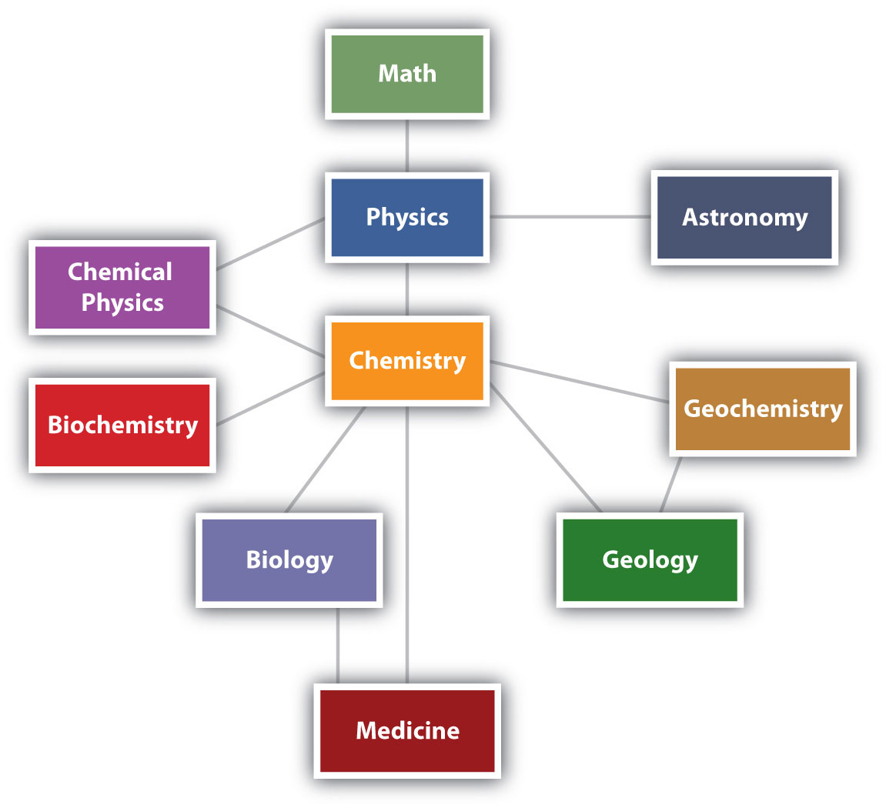
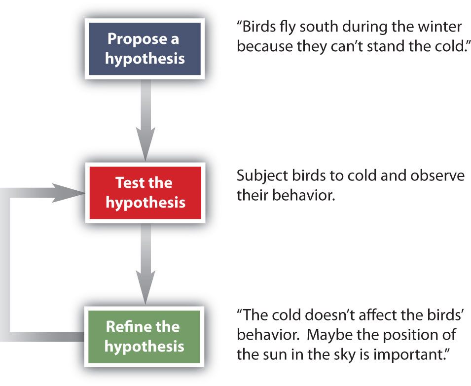

ChemistryThe study of matter. is the study of matter—what it consists of, what its properties are, and how it changes. Being able to describe the ingredients in a cake and how they change when the cake is baked is called chemistry. MatterAnything that has mass and takes up space. is anything that has mass and takes up space—that is, anything that is physically real. Some things are easily identified as matter—this book, for example. Others are not so obvious. Because we move so easily through air, we sometimes forget that it, too, is matter.
Chemistry is one branch of science. ScienceThe process by which we learn about the natural universe by observing, testing, and then generating models that explain our observations. is the process by which we learn about the natural universe by observing, testing, and then generating models that explain our observations. Because the physical universe is so vast, there are many different branches of science (Figure 1.1 "The Relationships between Some of the Major Branches of Science"). Thus, chemistry is the study of matter, biology is the study of living things, and geology is the study of rocks and the earth. Mathematics is the language of science, and we will use it to communicate some of the ideas of chemistry.
Although we divide science into different fields, there is much overlap among them. For example, some biologists and chemists work in both fields so much that their work is called biochemistry. Similarly, geology and chemistry overlap in the field called geochemistry. Figure 1.1 "The Relationships between Some of the Major Branches of Science" shows how many of the individual fields of science are related.
Figure 1.1 The Relationships between Some of the Major Branches of Science
Chemistry lies more or less in the middle, which emphasizes its importance to many branches of science.
There are many other fields of science, in addition to the ones (biology, medicine, etc.) listed here.
As our understanding of the universe has changed over time, so has the practice of science. Chemistry in its modern form, based on principles that we consider valid today, was developed in the 1600s and 1700s. Before that, the study of matter was known as alchemy and was practiced mainly in China, Arabia, Egypt, and Europe.
Alchemy was a somewhat mystical and secretive approach to learning how to manipulate matter. Practitioners, called alchemists, thought that all matter was composed of different proportions of the four basic elements—fire, water, earth, and air—and believed that if you changed the relative proportions of these elements in a substance, you could change the substance. The long-standing attempts to “transmute” common metals into gold represented one goal of alchemy. Alchemy’s other major goal was to synthesize the philosopher’s stone, a material that could impart long life—even immortality. Alchemists used symbols to represent substances, some of which are shown in the accompanying figure. This was not done to better communicate ideas, as chemists do today, but to maintain the secrecy of alchemical knowledge, keeping others from sharing in it.
In spite of this secrecy, in its time alchemy was respected as a serious, scholarly endeavor. Isaac Newton, the great mathematician and physicist, was also an alchemist.
Which fields of study are branches of science? Explain.
Solution
Which fields of study are branches of science?
politics
physiology (the study of the function of an animal’s or a plant’s body)
geophysics
agriculture
How do scientists work? Generally, they follow a process called the scientific method. The scientific methodAn organized procedure for learning answers to questions. is an organized procedure for learning answers to questions. To find the answer to a question (for example, “Why do birds fly toward Earth’s equator during the cold months?”), a scientist goes through the following steps, which are also illustrated in Figure 1.2 "The General Steps of the Scientific Method":
Figure 1.2 The General Steps of the Scientific Method
The steps may not be as clear-cut in real life as described here, but most scientific work follows this general outline.
Not all scientific investigations are simple enough to be separated into these three discrete steps. But these steps represent the general method by which scientists learn about our natural universe.
Define science and chemistry.
Name the steps of the scientific method.
Science is a process by which we learn about the natural universe by observing, testing, and then generating models that explain our observations. Chemistry is the study of matter.
propose a hypothesis, test the hypothesis, and refine the hypothesis if necessary
Based on what you know, which fields are branches of science?
Based on what you know, which fields are a branches of science?
Which of the following are examples of matter?
Which of the following are examples of matter?
Suggest a name for the science that studies the physics of rocks and the earth.
Suggest a name for the study of the physics of living organisms.
Engineering is the practical application of scientific principles and discoveries to develop things that make our lives easier. Is medicine science or engineering? Justify your answer.
Based on the definition of engineering in Exercise 7, would building a bridge over a river or road be considered science or engineering? Justify your answer.
When someone says, “I have a theory that excess salt causes high blood pressure,” does that person really have a theory? If it is not a theory, what is it?
When a person says, “My hypothesis is that excess calcium in the diet causes kidney stones,” what does the person need to do to determine if the hypothesis is correct?
Some people argue that many scientists accept many scientific principles on faith. Using what you know about the scientific method, how might you argue against that assertion?
Most students take multiple English classes in school. Does the study of English use the scientific method?
geophysics
Medicine is probably closer to a field of engineering than a field of science, but this may be arguable. Ask your doctor.
In scientific terms, this person has a hypothesis.
Science is based on reproducible facts, not blind belief.